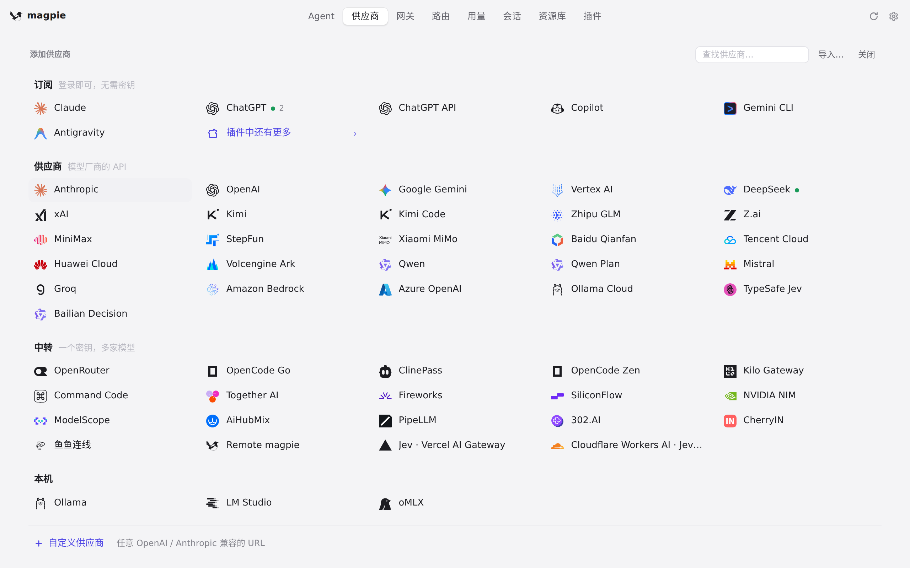
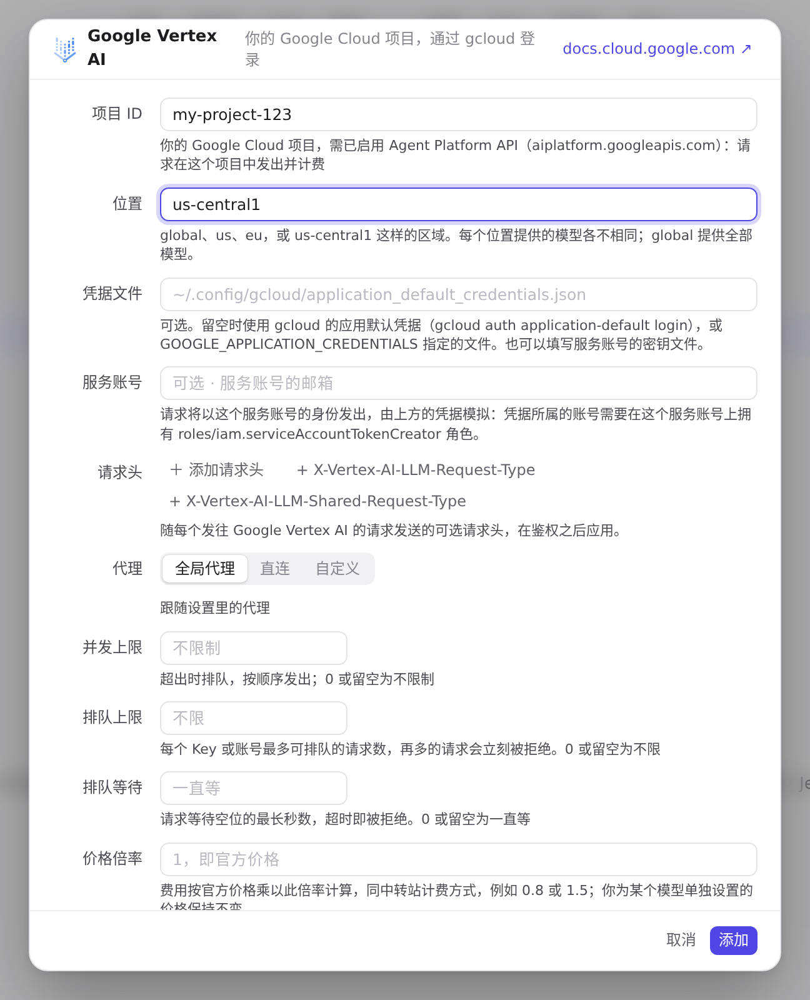

#1122 界面预览
commit c1afe71 · 回到 PR · 供应商页新增 Google Vertex AI 预设：添加面板多出一个磁贴，编辑器里原本填 API 密钥的位置换成项目 ID、位置、凭据文件和服务账号，端点一项显示由项目和位置拼出的地址；用量 → 请求列表把 Vertex AI 的 streamGenerateContent 请求标为 Gemini。
红线是鼠标走过的轨迹，红色圆环是一次点击；底部文字是这一步在做什么。空格暂停，← → 逐段查看。

添加 Google Vertex AI 供应商 · 打开后的添加供应商面板
 添加 Google Vertex AI 供应商 · Google Vertex AI 编辑器的四项输入
添加 Google Vertex AI 供应商 · Google Vertex AI 编辑器的四项输入
 添加 Google Vertex AI 供应商 · 点击「添加」后的同一份表单
添加 Google Vertex AI 供应商 · 点击「添加」后的同一份表单
 添加 Google Vertex AI 供应商 · 填入项目 ID、尚未保存时的表单
添加 Google Vertex AI 供应商 · 填入项目 ID、尚未保存时的表单

添加 Google Vertex AI 供应商 · 填入区域后、尚未保存时的表单